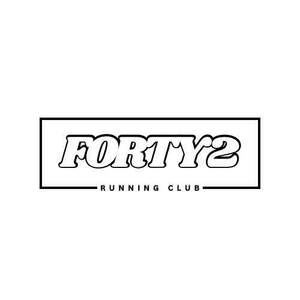

Trade Mark Journal No.2025/024 13 June 2025
UK00004209723 27 May 2025 (25,35)

- Class 25
- Clothing; Jackets [clothing]; Shorts [clothing]; Windproof clothing; Leisure clothing; Clothing for sports; Sports clothing; Athletic clothing; Tops [clothing]; Weatherproof clothing; Water-resistant clothing; Men's clothing; Gloves [clothing]; Clothes; Parts of clothing, footwear and headgear; Embroidered clothing; Rainproof clothing; Waterproof clothing; Casual clothing; Jackets being sports clothing; Jackets (Stuff -) [clothing]; Clothing for leisure wear; Bottoms [clothing]; Drawers [clothing]; Drawers as clothing; Clothing for cycling; Triathlon clothing; Running shoes; Running vests; Running Suits; Spiked running shoes; Walking shoes; Jogging shoes; Walking boots; Walking shorts; Driving shoes; Riding shoes; Jogging tops; Jogging pants; Cycling shoes; Track and field shoes; Riding boots; Hiking shoes; Training shoes; Work shoes; Jogging bottoms; Footwear for sports; Sports jerseys; Sports bras; Sports shoes; Sports singlets; Sports jackets; Sports shirts; Sports wear; Sports socks; Sports vests; Clothes for sports; Boots for sports; Sports bibs; Sports garments; Sports caps; Sports pants; Sports overuniforms; Footwear for sport; Footwear for use in sport; Moisture-wicking sports bras; Sports clothing [other than golf gloves]; Sports over uniforms; Moisture-wicking sports shirts.
- Class 35
- Retail services connected with the sale of clothing and clothing accessories; Promotion of sports competitions and events; Promotion of special events; Promotion services relating to esports events; Marketing services relating to esports events; Advertising services relating to esports events; Arranging promotion of charitable fundraising events; Conducting of commercial events; Organization of events, exhibitions, fairs and shows for commercial, promotional and advertising purposes; Promotion of goods and services through sponsorship of sports events; Arranging and conducting of promotional events; Organisation of exhibitions and events for commercial or advertising purposes; Advertising; Advertising and marketing; Advertising copywriting; Advertising and advertisement services; Advertising and publicity; Publicity and advertising; Advertising and marketing services; Advertising, marketing and promotional services; Advertising, promotional and marketing services; Marketing, advertising, and promotional services; Banner advertising; Television advertising; Advertising services of a radio and television advertising agency; Advertising and marketing consultancy; Advertising, marketing and promotion services; Marketing, advertising and promotion services; Advertising and promotional services; Promotional and advertising services; Promotional advertising services; Online advertising; Advertising and publicity services; Newspaper advertising; Advertising agencies; Leasing of advertising billboards; Hire of advertising billboards; Advertising services; Copywriting for advertising and promotional purposes; Electronic billboard advertising; Recruitment advertising; Promotion [advertising] of business; Radio advertising; Leasing of advertising hoardings; Promotion, advertising and marketing of on-line websites; Mail-order advertising; On-line advertising and marketing services; Magazine advertising; Cinema advertising; Advertising and promotion services; Outdoor advertising; Radio advertising and commercials; Advertising research; On-line advertising; Hire of advertising hoardings; Promotion [advertising] of travel; Advertising services provided by a radio and television advertising agency; Advertising of cinemas; Design of advertising flyers; Graphic advertising services; Advertising agency services; Advertising services for the promotion of e-commerce; Distribution of advertising, marketing and promotional material; Mediation of advertising; Dissemination of advertising, marketing and publicity materials; Digital advertising services; Design of advertising brochures; Classified advertising; Rental of advertising space on the Internet for employment advertising; Distribution of advertising brochures; Advertising planning; Preparation of advertising campaigns; Arrangement of advertising; Business assistance relating to starting and running a franchise; Advice in the running of establishments as franchises; Consultancy relating to the establishment and running of businesses; Business advisory services relating to the running of sandwich bars; Business advisory services relating to the running of restaurants; Assistance to industrial or commercial enterprises in the running of their business; Modeling for advertising or sales promotion; Modelling for advertising or sales promotion; Advertising analysis; Advertising consultation; Online advertising services; Consultancy services relating to advertising, publicity and marketing; Promotion [advertising] of concerts; Response advertising; Political advertising services; Rental of billboards [advertising boards]; Advertising flyer distribution; Rental of advertisement space and advertising material; Press advertising services; Modeling services for advertising or sales promotion; Scriptwriting for advertising purposes; Advertising services for the promotion of beverages; Advertising, promotional and public relations services; Production of advertising matter and commercials; Services of advertising agencies; Elevator advertising; Advertising research services; Press advertising consultancy; Research services relating to advertising and marketing; Brand creation services (advertising and promotion); Design of advertising logos; Dissemination of advertising and promotional materials; Distribution of advertising announcements; Classified advertising services; Hiring of advertising materials; Direct market advertising; Promotional advertising for exploration projects; Exhibitions for commercial or advertising purposes; Advertising for others; Advertising, including on-line advertising on a computer network; Post-production editing of advertising or commercials; Promotional marketing; Radio and television advertising; Rental of advertisement billboards; Advertisement billboards (Rental of -); Market research for advertising; Distribution of advertising leaflets; Consultancy relating to advertising; Web indexing for commercial or advertising purposes; Advertising text publication services; Rental of advertising material; Distribution of advertising materials; Planning services for advertising; Advertising and marketing services provided by means of social media; Advertising services for the literary industry; Advertising of business web sites; Advertising services relating to newspapers; Arranging of advertising in cinemas; Advertising, marketing and promotional consultancy, advisory and assistance services; Advertising services for architects; Production of advertising materials; Publication of advertising literature; Design of advertising materials; Marketing; Advertising and marketing services provided by means of blogging; Rental of signs for advertising purposes; Distribution of advertising mail and of advertising supplements attached to regular editions; Modelling agency services for advertising purposes; Advertising matter (Production of -); Production of advertising matter; Organisation of customer loyalty programs for commercial, promotional or advertising purposes; Distribution of products for advertising purposes; Publication of advertising texts; Advertising particularly services for the promotion of goods; Advertising flyer distribution for others; Organisation of exhibitions for commercial and advertising purposes; Organisation of exhibitions for commercial or advertising purposes; Modelling and models for advertising or sales promotion; Advertising services to promote the sale of beverages; Consultancy relating to business advertising; Promotional management for sports personalities; Business management of sports personalities.
Jamie Bentham